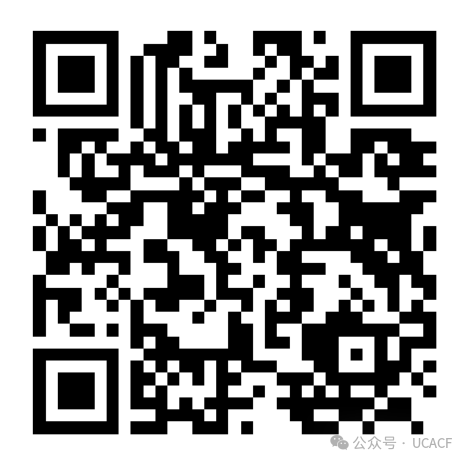
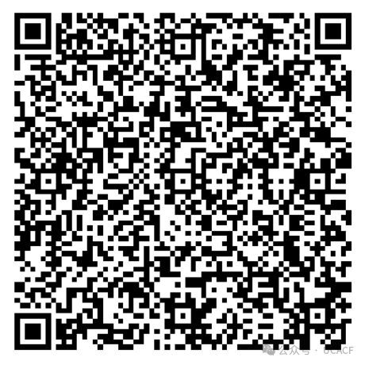

🌟 本月焦点｜让亚裔故事被看见
9月16日，亚裔美国人基金会（The Asian American Foundation，TAAF）正式推出 Asian+American Storytelling
Initiative（亚裔美国人故事讲述计划），面向全美创作者征集聚焦亚裔美国人和太平洋岛民（AAPI）的原创故事，尤其关注那些尚未得到充分记录的人物、社区与历史时刻。
该计划为入选项目提供最高10,000美元资助，以及专业导师指导和宣传支持，鼓励创作者通过影像、新闻、艺术及数字内容等多种形式，呈现AAPI社区丰富多元的经历。
UCACF鼓励社区伙伴及受资助机构持续关注此类资源与机会，积极发掘和记录身边的故事，让更多亚裔美国人的声音被听见，让值得珍藏的社区记忆得到传承。
On September 16, The Asian American Foundation (TAAF) launched its Asian+American Storytelling
Initiative, inviting creators nationwide to share original stories highlighting overlooked Asian
American and Pacific Islander (AAPI) individuals, communities, and significant moments in American
history.
The initiative offers selected projects grants of up to $10,000, along with professional mentorship
and promotional support. It encourages creators to bring underrepresented AAPI experiences to life
through film, journalism, art, and digital storytelling.
UCACF encourages its community partners and grantees to explore opportunities like this, uncover
meaningful local stories, amplify AAPI voices, and preserve the rich history and cultural heritage of
our communities.
Learn about the TAAF Storytelling Initiative
🌕 六镇携手庆中秋
10月3日，马萨诸塞州Acton举办中秋文化节，由Acton、Concord、Carlisle、Sudbury、Weston和Wayland六镇华人社团联合组织，吸引600余名社区居民参加。从热闹的传统文化市集到精彩纷呈的舞台演出，活动不仅展现了中华文化的独特魅力，也为不同社区搭建了交流与联结的平台。
获得UCACF资助的 Youth Reporters（最少年记者团）
也来到现场，记录节日盛况与社区故事。通过参与实地采访与新闻制作，年轻一代在提升沟通与表达能力的同时，也成为连接社区、传承文化的重要力量。
On October 3, Chinese American organizations from six Massachusetts towns—Acton, Concord, Carlisle,
Sudbury, Weston, and Wayland—came together to celebrate the Mid-Autumn Festival in Acton. The event
attracted more than 600 attendees, featuring traditional cultural displays, live performances, and
community activities that celebrated Chinese heritage and strengthened connections across
communities.
Supported by UCACF, Youth Reporters captured memorable moments and shared stories from the community.
Through hands-on reporting and storytelling, young participants developed their communication and
journalism skills while deepening their appreciation for cultural heritage and community engagement.

Watch the Youth Reporters' coverage
📚 理解差异，拥抱多样
在UCACF的资助支持下，Joyce与孩子共同创作的新书《当才华遇到挑战》电子版正式上线。这本历时两年完成的作品聚焦神经多样性（Neurodiversity）与双重特殊（Twice-Exceptional，2E）群体，探讨为何一些拥有突出才能的孩子和成年人，同时也可能面临学习、社交与情绪方面的挑战。
为了帮助更多家庭和教育工作者理解这一常被忽视的话题，作者此前已向相关社区捐赠1,000本纸质书。该书还获得斯坦福大学神经多样性及人类潜能中心主任Lawrence
Fung教授的推荐，并邀请语言病理学家、多元文化沟通专家刘丽容教授参与对话并撰写序言。
差异不是缺陷，理解是支持的起点。UCACF希望通过支持此类项目，推动社区对神经多样性的认识与接纳，让更多家庭获得理解与支持，也让每个人独特的潜能都能被看见。
With support from UCACF, Joyce and her child have released the e-book edition of 《当才华遇到挑战》,
a book developed over two years to raise awareness of neurodiversity and twice-exceptional (2E)
individuals. The book explores why children and adults with exceptional abilities may also
experience challenges in learning, social interactions, and emotional regulation.
To promote greater awareness and understanding, the authors have donated 1,000 printed copies to
communities with limited access to information about neurodiversity. The book also features a
foreword by Professor Lirong Liu, an expert in speech-language pathology and multicultural
communication, and a recommendation from Professor Lawrence Fung of Stanford University's
Neurodiversity Project.
Differences are not deficiencies, and understanding is the first step toward
inclusion. Through projects like this, UCACF supports greater awareness, acceptance, and
access to resources for individuals and families with diverse needs.

Learn about and read the book
✅ UCACF最新获批资助项目｜Newly Approved UCACF Grants
- UCA WAVES — Water Eagles: Empowering Karen Youth
- UCA — Lion Dance Across America
- Flourish Collective Foundation — Mindful Parenting
- Livingston Chinese Association — The Sound of Harvest Concert Series 2026
- Livingston Chinese Association — 25th Livingston Chinese Culture Day
- Chinese Railroad Workers Descendances As — Sharing the Chinese American Story at America’s 250th Anniversary
- ACP Foundation — 2026 ACP MetroCon
- Pittsburgh Chinese Cultural Center — Global Leadership Scholarship for Chinese Language & Cultural Studies Students
- CAPA-BC Special Needs Program — Special Needs Programs in Baltimore
- BrightUp Kids Inc. — BrightUp Kids Inclusive Chinese Families Program（童心同行 · 融合家庭计划）
- RISE2GETHER — Asian Women Summit 2026: Thrive in the AI Era
- Chinese Collegial Ministry — Mid-Autumn Reunion Gathering
- Guanghua Chinese School — Celebrating America250: A Community Education Program
- Harmony123 — 3rd Annual Charity Concert
- WWII Pacific War Memorial Hall — Chinese American WWII Memory and Digital Education Project
- North America Maple Culture Center — Pearl S. Buck Theatre Week
- Hmong Heritage Foundation — Hmong New Year Celebration
- Charleston Chinese Academy — CCA Youth Leadership Council Launch & Community Engagement Initiative
- Silk Road Cultural Collective — Journey Through Asia（亞洲文化之旅）
- The Greater Philadelphia Chinese Cultural Center — Community Center Renovation
- Chinese Community Center of Capital District of NY — AAPI Youth Leadership Institute
- The 8 Foundation — Mid-Autumn Festival and Volunteer Award Ceremony
- The American Overseas Arts Theater — The Amazing Next-Generation Overseas Chinese Global Award Program
- Chinese American Association of Lexington — "Better Together" Pickleball Cup
- Washington State China Relations Council — 2026 U.S.-China Symposium
- Philly Asian Am Film Foundation — 19th Annual Philly Asian American Film Festival
- ZGZG Foundation — 2026载歌在谷首届音乐节
- Melonaire Drama Workshop — Spring Flowers and Autumn Moon: Chinese Poetry and Cultural Performance
- Franklin Foundation — Documentary Film "Happy Fairy Tale"
- Hunan Association of Northwest USA — 微舞剧《海萦梦乡》
- Silicon Valley Community Media / Ding Ding TV — Asian American Stories 2027: Our Food, Our Stories
- Dance Revelasian — Kalāsangama: The Untold Story of the Silk Road
- Asian American Youth Athletic Association — AAYAA Mahjong Cultural Heritage Festival